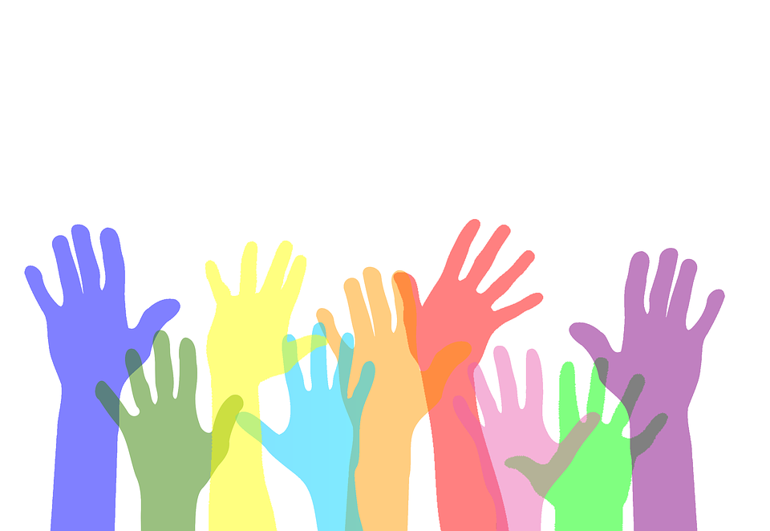
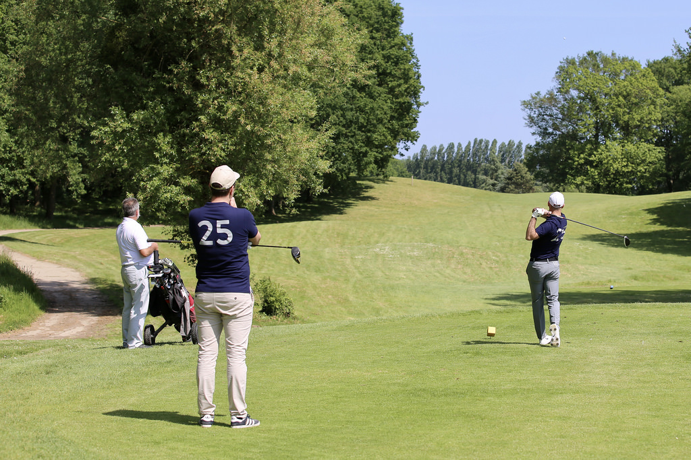
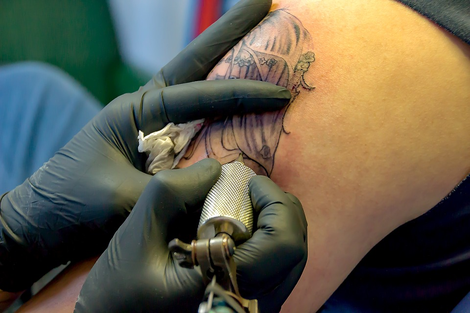

Notre agence OSP (Organisation des Soins à la Personne) est une start-up française fondée en 2017.
Notre agence de communication est spécialisée dans le domaine du sanitaire et du social.
Notre objectif découle d’un désir de faciliter le quotidien de personnes dans le besoin, que ce soient des personnes handicapées, des personnes âgées ou encore des personnes atteintent de maladies graves, en complément d’éventuels soins qui leur sont réservés auprès d’établissements médicaux.
Nous nous engageons à soumettre des alternatives, à guider et à conseiller du mieux possible et de manière fiable, en mettant en avant diverses plateformes et services relatifs à la santé publique.
Nous sommes sollicités par de nombreuses entreprises et associations qui utilisent nos services pour la valorisation et la promotion de leurs projets. Ainsi, nous les aidons dans la conception d'une stratégie de communication adaptée à chacun de leurs projets.
OSP à aussi pensé à réaliser ses propres projets dont Health Community+ qui vient en aide aux personnes en situation de handicap physique.
Notre équipe
Nathan Makouiza
Communiquant
Marie Pichot
Communiquante
Wissam Hourieh
Chef de projet
Pauline Choquet
Infographie
Naouel Zenati
Dévelopeur
Katleen Nelson
Dévelopeur
Les dernières actualités d'OSP
Health Community+
Publié le 5 septembre 2018, par Admin
OSP AGENCY créée son propre projet !
Un site internet proposant des solutions adaptées selon les besoins de personnes souffrant de handicaps physiques,
contenant un système de géolocalisation de lieux possédant des infrastructures adaptées comme des complexes sportifs, centres médicaux, établissements scolaires ou administratifs.
Notre motivation pour la réalisation de ce site réside dans notre désir d’aider les personnes ayant des contraintes. Nous souhaitons améliorer leur quotidien en créant un support qui permettrait de rendre plus facile d’accès des lieux indispensables à de nombreuses personnes handicapées. De plus, le support disposera de chats thématiques à travers lesquels les utilisateurs seront amenés à interagir entre eux. Projet 2018-2019.
Health Community+ est un site internet adaptable en version mobile proposant diverses solutions adaptées selon les besoins de personnes souffrant de handicaps.
Ce site web dispose d’un système de géolocalisation, qui permettrait de pouvoir trouver en temps réel des infrastructures adaptés selon différents critères et besoins. Sur notre site sont référencés des complexes sportifs, des
centres médicaux, des établissements scolaires ou administratifs équipés de dispositifs adaptés pour les personnes
handicapées.
Notre principale motivation pour la réalisation de ce site réside dans notre désir d’aider les personnes ayant des
contraintes en ce qui concerne l’accès à de nombreux dispositifs et ce à cause de leurs handicaps. Nous avons en
effet remarqué que rien qu’en région parisienne, les dispositifs adaptés aux personnes handicapés ont un manque
de visibilité. Voilà pourquoi nous voulons changer la donne en créant un support qui permettrait de rendre plus facile
d’accès des lieux indispensables à de nombreuses personnes handicapées.
Ce site Internet permettrait, par exemple, à de nombreuses personnes passionnées de sport d’avoir à portée de
main des solutions pour faciliter leur pratique sportive selon leur handicap.
Notre support disposera aussi de chats thématiques à travers lesquels les utilisateurs seront amenés à interagir
entre eux.
Pour parvenir à réaliser un tel projet, il nous sera nécessaire de mobiliser une équipe de développement aguerrie
pour la mise en place du système de géolocalisation. Il faudra également se rapprocher des collectivités locales et
mairies de différentes communes, pour pouvoir recenser les divers dispositifs spécialisés et adaptés à des personnes
souffrant d’handicap.
Vous pouvez télécharger le cahier des charges en cliquant ici Vous pouvez aussi télécharger le cahier de recommandation en cliquant ici

Binome 21 et le lien intergénérationnel
Publié le 5 octobre 2018, par Admin
Binôme 21, c’est quoi ?
Une association, née en 2010, qui oeuvre pour une solidarité intergénérationnelle
: “une entraide citoyenne pour une meilleure connaissance mutuelle”.Leur but est de créer un lien entre les jeunes et les personnes âgées. Elle propose en tout 3 missions : un service civique auprès des personnes âgées, la cohabitation intergénérationnelle et créer du lien intergénérationnel sur les territoires.
Le service civique, ça se passe comment ?
Il est avant tout volontaire, c’est du bénévolat. Les personnes de 18 à 25 ans peuvent s’y engager à raison de 24h par semaine pendant 6 mois, en accompagnement groupé ou individuel, afin d’aider les seniors qui se sentent seuls, nécessitent un service ou une présence. Aussi, ces jeunes peuvent être un soutien pour les personnes qui s’occupent de ces dits seniors.
Le logement intergénérationnel, quoi et où ?
Le principe est simple : “loger des jeunes à la recherche d’un logement chez un senior disposant d’une chambre libre” et meublée. Il existe deux type de cohabitation : la solidaire: le jeune doit participer aux charges et rester le soir et la nuit afin de rassurer la personne âgée, ou bien, la conviviale: le jeune paye une indemnité d'occupation. Dans tous les cas, le jeune doit verser une participation à l’association Binôme 21.
Rendez-vous à Bobigny
Publié le 06 février 2018, par Admin
Ce samedi 9 février, nous vous acceuillons au campus Bobigny.
Nous avons le plaisir de vous présenter notre agence ainsi que notre projet Health community+.
Venez donc nombreux !

Trophée Golf Perce-Neige, refait son grand retour en cette fin d’année: RDV le 24 octobre 2018
Publié le 14 septembre 2018, par Admin
La Fondation Perce-Neige qu'est-ce que c'est?
Elle a pour but d’accueillir et d’accompagner de façon adaptée les enfants et les adultes touchés par une déficience mentale, un handicap physique ou psychique. Chaque année, a lieu leur fameuse compétition de golf, qui a dû susciter un itérêt particulier lors des précédentes éditions.
Pour la 13ème édition , l’organisation mettra en place des rencontres régionales avec 4 compétitions de clubS. Entre 140 et 160 joueurs participent à ce rendez-vous.
Les montants collectés lors de chaque Trophée Golf Perce-Neige permettent de financer des projets et équipements pour les résidents des Maisons Perce-Neige (salle de sport/motricité, salle snoezelen, vélos, équipement vidéo, activités sportives, culturelles à l’extérieur de l’établissement …).
En quelques chiffres, le “Trophée Golf Perce-Neiges” c’est : 5 compétitions organisées d’octobre à décembre et 37 000 € collectés grâce aux dons des golfeurs qui seviront à contribuer aux actions de cette association.
Course dans la capitale
Publié le 28 octobre 2018, par Admin
Ce samedi 3 novembre, l'Hôpital de Paris organise une course au centre capital
afin de récolter des fonds pour aider les enfants atteints de maladies. La course débutera à Nation et prendra fin à l’Arc de Triomphe. Cette course est ouverte à tout le monde et l’inscription sera facturée 5 euros. Les recettes seront ensuite envoyées aux hôpitaux afin d’aider des enfants malades à réaliser différentes sorties. Ces sorties leur permettront de s’amuser comme n’importe quel enfant le ferait, en visitant des parcs, des pays étrangers ou encore en participant à de nombreuses activités. Nous vous attendons nombreux et nombreuses à cette course.

Les tatouages qui réparent le corps et l’esprit
Publié le 20 août 2018, par Admin
L’association Soeurs d'Encre est une association composée de tatoueuses.
Elle aide les femmes à se réapproprier leurs corps par le tatouage après un cancer du sein, une maladie, une blessure. Cette association organise des éditions de la semaine “Rose Tattoo” où les artistes tatouent gratuitement des femmes qui ont subi une mastectomie suite à un cancer. Ces tatouages qui “soignent” permettent aux maux du corps de s’effacer avec le bien-être psychologique retrouvé.